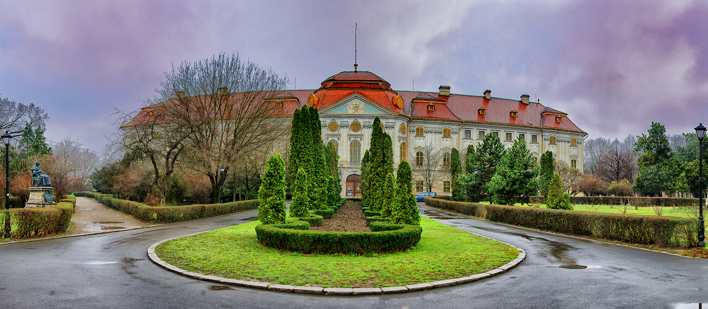
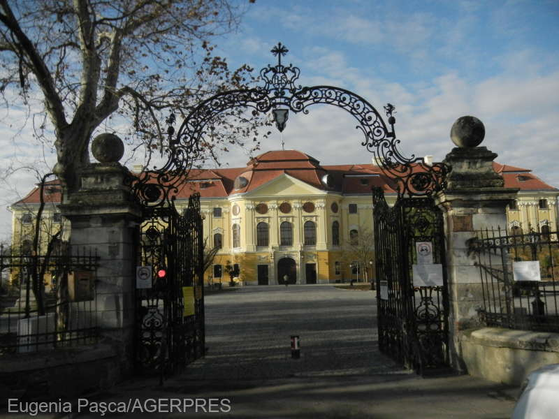
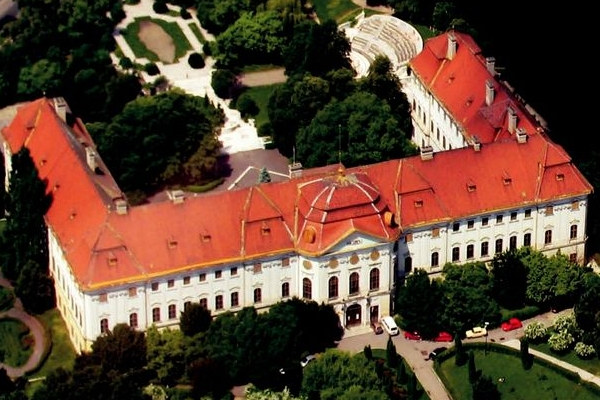
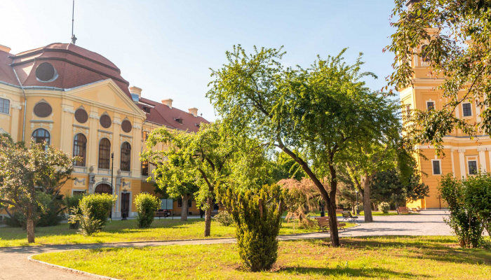

Așezarea orașului Oradea
| Palatul Episcopiei Romano-Catolice din Oradea, cunoscut și ca Palatul Baroc din Oradea, este unul din cele mai valoroase edificii construite în stil baroc pe teritoriul României. La fel ca și Bazilica Sf. Maria și Șirul Canonicilor, palatul a fost ridicat în a doua jumătate a secolului al XVIII-lea. Cele trei obiective formează împreună cel mai important complex baroc din România, precum și unul din cele mai reprezentative ale Europei. |
| Din 1971 până în 2006 Palatul Baroc a găzduit Muzeul Țării Crișurilor. |

| Istoric |
| La 23 mai 1762 s-a pus piatra de temelie a Palatului Baroc, destinat a fi sediu al Episcopiei romano-catolice de Oradea. Arhitectul austriac Franz Anton Hillebrandt (1719 - 1797) a preluat conducerea șantierului deși, inițial, arhitectul italian Giovanni Battista Ricca a fost desemnat în acest rol. |

| Construcție |
| Timp de 15 ani, respectiv până în anul 1777, s-a ridicat la Oradea, un palat în forma literei U, care se dezvolta pe 3 nivele fiind încununat de un acoperiș frânt, specific barocului austriac. |
| În perioada 1945-1989 clădirea a fost folosită mai întâi ca azil pentru revoluționarii comuniști greci refugiați în România, începând cu 1956. Înalții funcționari ai Episcopiei romano-catolice maghiare au avut 4 ore la dispoziție să părăsească edificiul, fără a avea dreptul de a scoate nimic în afară de unele lucruri personale. Refugiații greci în număr de cca. 1.000 persoane, sosiți aici cu copii, capre, magari, au reusit sa deterioreze in cativa ani palatul.[necesită citare] În anul 1963 episcopul romano-catolic a fost constrâns sa semneze un act prin care Biserica a cedat edificiul spre folosință în favoarea municipiului Oradea. La 17 ianuarie 1971 se deschide Muzeul Țării Crișurilor din Oradea. După un îndelungat proces de revendicare, câștigat în cele din urmă de Episcopia Romano-Catolică, dreptul de proprietate asupra palatului a fost recunoscut vechiului proprietar, iar restituirea folosinței clădirii a început în anul 2006. |


| Descriere |
| Pe fațada principală se detașează rezalitul central, decorat simetric cu pilaștri terminați în capiteluri ionice, ghirlande și falduri, toate acestea punând în valoare, cu o distincție unică, porțile de acces spre interior și ferestrele de la etajul I, rezalit terminat în partea superioară într-un fronton triunghiular. |
| Interioarele palatului impresionează prin rigoarea organizării spațiale și sobrietatea decorativă, caracteristici ce se regăsesc prezente în holul central și la nivelul etajului de referință din configurația clădirii, spre care se accede printr-o scară monumentala. Aici se afla Sala festivă, impozantă prin volumetrie și prin decorurile pictate datorate lui Francisc Storno (1879), de inspirație renascentistă, și Capela Palatului, unde se păstrează picturi semnate de plasticianul de origine bavareză, Johann Nepomouk Schöph. Acesta, pe tavanul capelei, reconstituie printr-un desen expresiv și un colorit bine temperat bolta cerească, iar în pânza de deasupra altarului reda tema sfântului Carol Boromaeus rugându-se în timpul epidemiei de ciuma, ambele picturi înnobilând încapărea respectivă. |
| În ceea ce privește restul camerelor de la etajul I, acestea se individualizează prin soluții decorative și de ambientare interioară în maniera barocului austriac: pilaștri terminați în capiteluri corintice, stucaturi de o diversitate a formelor ornamentale remarcabilă, sobe de faianță glazurată ce se disting prin proporții și rezolvari estetice aparte, șemineuri placate cu marmură colorată. |
| Organizarea în plan și din punct de vedere decorativ al parterului și etajului II stă sub semnul simplității și funcționalității. Palatul este un model de referință pentru barocul european. |
Realizat de Vlad Luncan - 2022